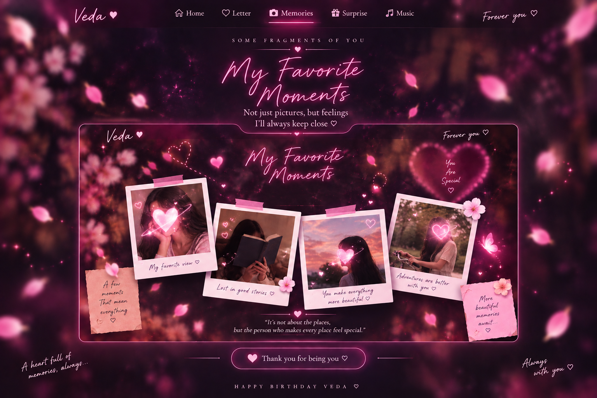

“నీ నవ్వు చూస్తే నా ప్రపంచమే ఇంకొంచెం అందంగా మారిపోతుంది.”
Your smile makes my whole world a little more beautiful.♡
A private little universe
For Veda
There is a tiny world waiting for you inside.
Take your time. It's made just for you.
For Vedavathi · Hedavathi · Lavanya
Happy Birthday,
my Veda.
Today isn't just another date. It's the day the world got a little more beautiful — and somehow, my world did too.
08 · OCTOBER · 2001made with love
scroll gently ↓
♡
A letter for you
01My dearest Veda,
Some people arrive in our lives and quietly change the feeling of ordinary days. You are one of those people for me.
I hope this new year of your life gives you reasons to smile when nobody is watching, dreams that scare you in the best possible way, and little moments that you will want to keep forever.
If this page could hold everything I want to say, it would need a whole universe. So let this little corner of the internet say the simplest part:
You are deeply, wonderfully special. ♡
Keep becoming the person you are meant to be. Keep choosing joy. And whenever life feels loud, I hope you remember how loved you are.
— with all my love
నీ కోసం · For you
02కొన్ని మాటలు
మనసు నుంచి.
“నువ్వు నా జీవితంలోకి వచ్చిన రోజు నుంచి, సాధారణమైన క్షణాలకూ ఒక ప్రత్యేకమైన అర్థం వచ్చింది.”
Since you came into my life, even ordinary moments have felt special.“నీ కలలన్నీ నిజమవ్వాలి… నీ ప్రతి రోజూ నిన్ను చూసి నవ్వాలి.”
May your dreams come true, and may every day give you a reason to smile.“ఎన్ని జన్మలైనా… ప్రతి జన్మలోనూ నిన్నే కలవాలని కోరుకుంటాను.”
In every lifetime, I would still wish to find you.Little things I notice
03Three little things
that feel like you.
Your smile
It turns an ordinary moment into something I want to remember.
Your heart
The kindness and warmth you carry, often without even noticing.
Your way of being
There is a quiet magic in the person you are becoming, one day at a time.
Your little universe
04A few chapters
worth keeping.
01
08 · 10 · 2001
The beginning
The first page of the story of someone wonderfully, unmistakably you.
02
all the days since
The becoming
Every laugh, lesson, hard day and little victory helped shape the person you are now.
03
next chapter
More of everything
More dreams. More adventures. More tiny moments that deserve to become memories.
04
always
The parts that stay
Some memories fade at the edges. The ones that matter quietly become part of us.
A few little memories
05Moments I would keep
forever.
A dreamy memory artwork made especially for Veda — no original portraits are displayed here.

✦
06 · Make a wish
Close your eyes.
Wish big.
Think of one thing you want this year to bring you. Keep it secret.
☾
One last thing
May this year be
beautifully yours.
More laughter. More courage. More beautiful surprises.
And a thousand small reasons to smile.
Happy Birthday, Veda. ♡